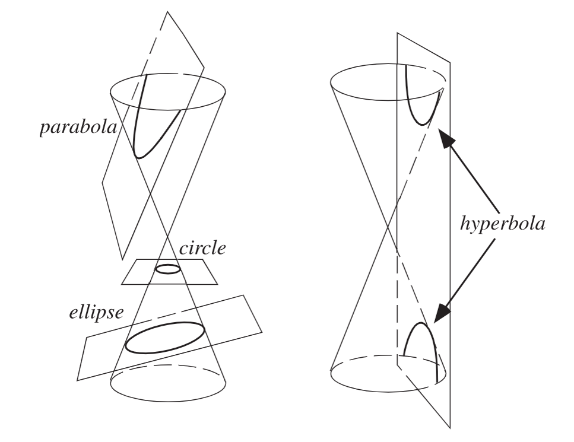
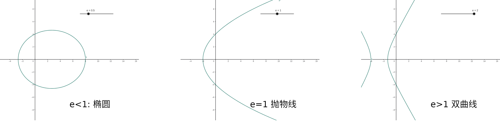
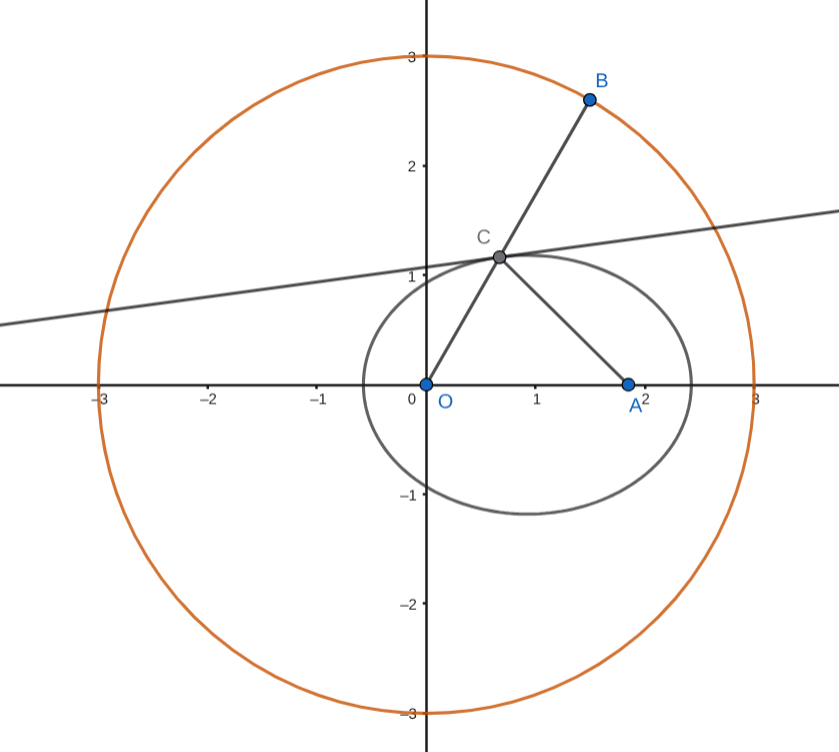
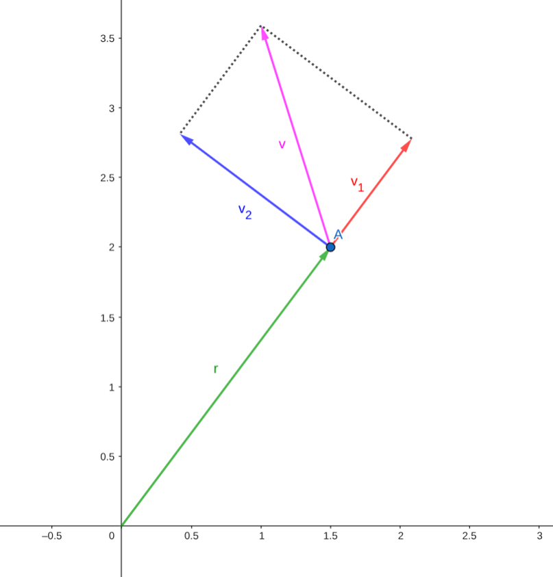
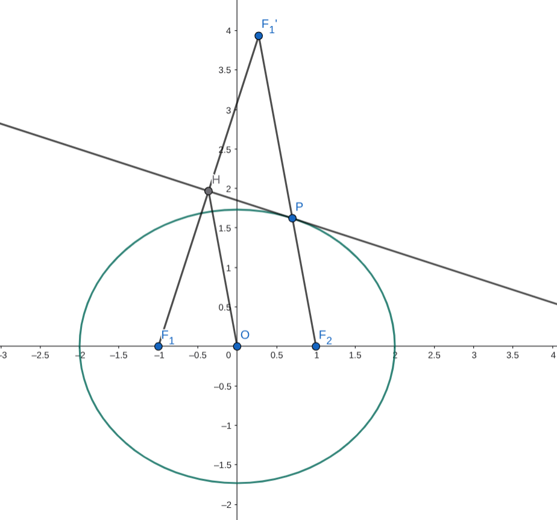

圆锥曲线
圆锥曲线的定义, 包含: 圆, 椭圆, 抛物线, 双曲线
这里主要关注圆以外的三种
基础知识
椭圆 (ellipse):
- 原始定义: 到两点距离和为定值的点的轨迹, 是一个椭圆
- 圆锥定义: 斜着切一个圆锥, 倾斜度不超过母线的切, 截得曲线是椭圆
- 标准方程: \(\dfrac{x^2}{a^2}+\dfrac{y^2}{b^2}=1(a>b>0)\), 半焦距 \(c=\sqrt{a^2-b^2}\)
- 离心率 \(e=\dfrac{c}{a}<1\)
抛物线 (parabola):
- 原始定义: 到定点和定直线距离相等的点的轨迹, 是一个抛物线
- 圆锥定义: 斜着切一个圆锥, 和母线平行的切, 截得曲线是抛物线
- 标准方程: \(y^2=2px(p>0)\)
- 离心率 \(e=1\)
双曲线 (hyperbola):
- 原始定义: 到两点距离差的绝对值为定值的点的轨迹, 是一个双曲线
- 圆锥定义: 斜着切一个圆锥, 倾斜度大于母线的切(比如竖直的切), 截得曲线是双曲线的一支
- 将圆锥反向延伸, 切这个反向延伸的圆锥得到的曲线, 是双曲线的另一支 (看不懂可以看图)
- 标准方程: \(\dfrac{x^2}{a^2}-\dfrac{y^2}{b^2}=1(a>0,b>0)\), \(c=\sqrt{a^2+b^2}\)
- 离心率 \(e=\dfrac{c}{a}>1\)
- 双曲线有渐近线: \(y=\pm \frac{b}{a}x\), 它和双曲线之间会离的越来越近
- 渐近线的方程可以看成把标准方程右侧的 \(1\) 变成 \(0\)
关于圆锥中的定义, 可以参考下图, 来自 wolfram mathworld

离心率是一个圆锥曲线的特征参数, 它大概描述的是一个 "扁平程度".
- 对于椭圆而言, 离心率越接近 0, 则越接近圆 (越 "圆润"); 离心率越接近 1, 则越接近直线 (越 "扁平").
- 椭圆也可以用字面意思理解 "离心率", 就是看焦点偏离其中心 (标准方程的椭圆, 中心就是原点) 偏离了多少
- 对于双曲线而言, e 越大, 其开口越大, 或者说其渐近线的夹角越大
- 离心率相同的圆锥曲线都相似, 相似意味着可以通过缩放变成相同的. 这也说明, 所有抛物线都相似
关于标准方程: 这三个方程都是横过来的, 竖过来只需交换 \(x,y\) 即可. 若无特殊说明, 下面讨论曲线默认按这三种方程讨论, 即我们默认焦点在 \(x\) 轴上, 抛物线开口向右
警告
大家一般确实都习惯这样的, 横过来的标准方程.
但是考试的时候一定要小心竖过来的情况!!!!!
通径: 过焦点作垂直于对称轴的直线, 交曲线于 \(AB\) 两点, \(AB\) 为通径, 通径长度的一半为半通径, 记为 \(p\)
- 对于抛物线来说就是它参数的那个 \(p\), 对于椭圆和抛物线, 不难算出 \(p=\dfrac{b^2}{a}\)
- 高中的课本里面没有直接提到这个定义, 但它会在极坐标里面用到, 后面我们会见到它
焦半径
对于曲线上的点 \(P\), \(P\) 到焦点距离称为焦半径
椭圆: \(PF_1=a+ex,\quad PF_2=a-ex\)
抛物线: \(PF=x+\dfrac{p}{2}\)
双曲线: \(PF_1=|a+ex|,\quad PF_2=|a-ex|\)
证明
对于抛物线, 显然可以利用基本定义得到
对于椭圆和双曲线, 道理一样, 以椭圆为例
根据椭圆方程, \(P(x,y)\) 满足 \(\frac{x^2}{a^2}+\frac{y^2}{b^2}=1\), 并且 \(c=ae\), 且 \(a^2=b^2+c^2\) 从而:
\(PF_1^2=(x-c)^2+y^2=(x-c)^2+b^2(1-\frac{x^2}{a^2})=(1-\frac{b^2}{a^2})x^2-2cx+(b^2+c^2)\)
\(=e^2x^2-2cx+a^2=(ex+a)^2\). \(PF_2\) 可以同理得到.
关于记忆
其实可以统一的记成 \(PF_1=|a+ex|, PF_2=|a-ex|\)
对于椭圆而言, 这俩一定都正的, 所以上面绝对值可以去掉, 绝对值是为了兼容双曲线, 里面可能会有负的
广义焦准式
我们可以从上面的焦半径, 推导出一些有趣的东西
以椭圆为例, 任取点 \(A\), \(AF_2=a-ex=e(\dfrac{a}{e}-x)=e(\dfrac{a^2}{c}-x)\)
这个 \(\dfrac{a^2}{c}-x\) 可以看成直线 \(x=\dfrac{a^2}{c}\) 到 \(A\) 的距离. 这个距离, 和 \(A\) 到 \(F_2\) 的距离, 比例为定值.
这样, 就可以像抛物线一样的定义椭圆的准线和焦点: 椭圆上的点, 到焦点的距离比上到准线的距离 (焦准距离比), 为定值 \(e\)
关于记忆
注意到 "焦准距离比" 里面 "焦" 在前面, "准" 在后面
所以 \(e=\dfrac{\text{焦距}}{\text{准距}}\)
上面取的是 \(AF_2\), 得到了一个右边的准线. 也可以取 \(AF_1\), 这样得到一个左边的准线 \(x=-\dfrac{a^2}{c}\).
是的, 椭圆和双曲线的准线, 有两条, 称为左准线和右准线, 它们与左焦点和右焦点是对应的.
椭圆和双曲线的左右准线, 都是 \(x=-\dfrac{a^2}{c}\) 和 \(x=\dfrac{a^2}{c}\)
这可以用来作一个 统一的 圆锥曲线定义:
- 到定直线 \(l\) 的距离, 和到定点 \(F\) 的距离的比值为定值 \(e\) 的点, 轨迹为圆锥曲线
- \(0\lt e\lt 1\) 时为椭圆, \(e=1\) 为抛物线, \(e>1\) 为双曲线
极坐标式
标准方程里, 我们是以椭圆和双曲线的中心, 抛物线的顶点为原点建系的
假如我们换成以焦点为原点建系, 会如何?
以焦点为原点时, 性质更好的不是直角坐标系, 而是 极坐标系
什么是极坐标系
极坐标系用方向和距离描述点的位置. 通常我们用 \(r\) 表示距离, \(\theta\) 表示方向角 (弧度制), 一个极坐标就写成 \((r,\theta)\)
极坐标系可以转换成直角坐标系: 极坐标 \((r,\theta)\to\) 直角坐标 \((r\cos \theta, r\sin \theta)\)
推导椭圆的极坐标式
我们不妨以左焦点 \(F_1\) 为极坐标系原点, 考虑点 \(A\), 假设标准的直角坐标系里, \(A\) 在 \((x,y)\)
那么极坐标系的 \(r=AF_1=a+ex\), 根据上面的焦点弦公式
假设角度是 \(\theta\), 则有 \(-c + r\cos \theta = x\), 考虑 \(F_1\) 和 \(A\) 的 \(x\) 坐标差
变形, \(-c+(a+ex)\cos \theta=x\), 得 \(\cos \theta=\dfrac{x+c}{ex+a}\)
为了表达出 \(r\) 和 \(\theta\) 关系, 我们需要消掉 \(x\), 考虑 \(e\cos\theta=\dfrac{ex+ec}{ex+a}\), 可以提一个 \(1\) 之后分子的 \(ex\) 就没了, 分母的 \(ex+a\) 可以替换成 \(r\), 得:
\(e\cos \theta=1+\dfrac{ec-a}{r}\)
变形得 \(r=\dfrac{a-ec}{1-e\cos \theta}\). 好巧不巧, 可以发现 \(a-ec\) 正好是 \(\dfrac{b^2}{a}\), 就是我们之前求过的半通径 \(p\)
所以: \(r=\dfrac{p}{1-e\cos \theta}\)
试着推双曲线, 发现双曲线的式子竟然 一模一样! 甚至抛物线(开口向右时) 也一样!
但是, 如果换成另一边的焦点, 可以推导发现, 可能会出现 \(r=\dfrac{p}{1+e\cos \theta}\) 的情况
那么, 什么时候取 \(+\), 什么时候取 \(-\) 呢? 见下表
| 何时取？ | \(r=\dfrac{p}{1+e\cos \theta}\) | \(r=\dfrac{p}{1-e\cos\theta}\) |
|---|---|---|
| 椭圆 | 右焦点 | 左焦点 |
| 双曲线 | 左焦点 | 右焦点 |
| 抛物线 | 开口朝左 | 开口朝右 |
可以看图像帮助理解. 对于 \(r=\dfrac{p}{1-e\cos\theta}\) 的情况, 固定焦点为原点, 随着 \(e\) 的增加, 呈现这样的图像:

关于记忆
其实椭圆和双曲线也可以看成 “开口朝左/右” (只看局部), 可以感受到, 然后只要记抛物线的即可
就比如这个图, 很清楚的看到它从 "椭圆左焦点", 变成 "开口向右抛物线", 再变成 "双曲线右焦点".
但原点附近的这一段图像, 永远是 "开口向右" 的
实在不行, 把 \(\theta=0\) 代入看看对不对即可
注意到双曲线中可能有 \(r<0\) 的情况, 此时是跑到反方向上去了. 例如左焦点建系, \(r>0\) 的是左支, \(r<0\) 的就是右支
焦点弦中的公式
焦点弦的意思是, 一条过焦点的直线和圆锥曲线交出来的弦
可以看成两条相对的焦半径拼起来, 那焦半径就可以用极坐标做
可以看出, 学会极坐标的工具以后, 就能轻松证明焦点弦里的结论
结论:
- 三种曲线均满足: 过焦点 \(F\) 的弦 \(A,B\), \(\dfrac{1}{FA}+\dfrac{1}{FB}=\dfrac{2}{p}\)
- 对于抛物线, 还有: 设 \(A(x_1,y_1),B(x_2,y_2)\), \(x_1x_2=\dfrac{1}{4}p^2,y_1y_2=-p^2\)
证明
第一个: \(FA,FB\) 是 \(\dfrac{p}{1+e\cos \theta}, \dfrac{p}{1-e\cos \theta}\)
从而 \(\dfrac{1}{FA}+\dfrac{1}{FB}=\dfrac{1+e\cos \theta+1-e\cos \theta}{p}=\dfrac{2}{p}\)
第二个: \(e=1\), \(y_1y_2=-FA\cdot FB\cdot \sin ^2\theta=-\dfrac{p^2}{1-\cos ^2\theta}\cdot \sin ^2\theta=-p^2\)
然后根据 \(y^2=2px\) 得到 \(x_1x_2=\dfrac{1}{4}p^2\)
此外, 当看到题目里有焦点弦的时候, 尤其涉及到长度, 就可以考虑用极坐标来做, 会很方便
焦点三角形
仅限椭圆和双曲线
对于曲线上的点 \(P\), 焦点三角形即为 \(\triangle PF_1F_2\)
设 \(\theta\) 为顶角 \(\angle F_1PF_2; \quad \alpha,\beta\) 为两个底角
则有结论：
| 面积 | \(\cos\theta\) | \(\sin\theta\) | |
|---|---|---|---|
| 椭圆 | \(b^2\tan(\theta/2)\) | \(\dfrac{2b^2}{PF_1PF_2}-1\) | \(e(\sin\alpha+\sin\beta)\) |
| 双曲线 | \(\dfrac{b^2}{\tan(\theta/2)}\) | \(1-\dfrac{2b^2}{PF_1PF_2}\) | \(e\vert\sin\alpha-\sin\beta\vert\) |
对于双曲线, 还有: 焦点三角形内切圆的 \(x\) 坐标为 \(a\) (根据切线性质设切线长即可)
来说这个结论一般有什么用.
- 面积是最有用的, 说明面积只和顶角 \(\theta\) 有关.
- \(\cos \theta\) 通常是求面积的一个步骤.
- \(\sin \theta\) 和 \(e\) 挂钩, 当知道底角的 \(\sin\) 的时候, 可以用该公式快速求离心率
- 内切圆这个, 常出现在选择题里, 如果知道就可以秒
证明面积的公式, 有两种做法
在开始证明之前
椭圆中有一个常用的恒等式: 假设椭圆上点 \(P(x,y)\), 焦点为 \(F_1,F_2\), 那么
\(PF_1\cdot PF_2=a^2+b^2-x^2-y^2\)
对于双曲线, 则是
\(PF_1\cdot PF_2=b^2-a^2+x^2+y^2\)
用焦半径公式结合圆锥曲线标准方程即可证明
接下来正式开始证明, 我们以椭圆为例
第一种: 先求cos
大概是, 用余弦定理解方程求出 \(\cos\), 然后用 \(\dfrac{1}{2}\sin\theta \cdot PF_1PF_2\) 求面积, \(PF_1PF_2\) 可以被 \(\cos\) 表示, 就出来了
余弦定理: \(PF_1^2+PF_2^2-2\cos \theta PF_1PF_2=4c^2\)
\(\cos \theta=\dfrac{PF_1^2+PF_2^2-4c^2}{2PF_1\cdot PF_2}\)
分子 \(=(x+c)^2+y^2+(x-c)^2+y^2-4c^2=2x^2+2y^2-2c^2\)
从而 \(\cos \theta=\dfrac{x^2+y^2-c^2}{PF_1PF_2}=\dfrac{x^2+y^2-c^2}{a^2+b^2-x^2-y^2}\)
拿一个 \(-1\) 出来, 消掉分子的 \(x^2+y^2\), 得:
\(\cos \theta=\dfrac{a^2+b^2-c^2}{a^2+b^2-x^2-y^2}-1=\dfrac{2b^2}{PF_1PF_2}-1\)
反过来, \(PF_1PF_2=\dfrac{2b^2}{1+\cos \theta}\)
\(S=\dfrac{1}{2}\sin\theta \cdot PF_1PF_2=\dfrac{1}{2}\sin\theta \cdot\dfrac{2b^2}{1+\cos \theta}=b^2\tan (\frac{\theta}{2})\)
第二种: 直接对三角形下手
对于任意三角形 \(ABC\), 都有: 面积 \(S=\dfrac{1}{4}((b+c)^2-a^2)\tan (\dfrac{1}{2}A)\)
其中角 \(A,B,C\) 所对的边长度依次为 \(a,b,c\)
然后, 把三角形放在椭圆里, 取 \(A\) 为椭圆周上的一点, \(B,C\) 为两个焦点, 得到的就是该结论
那这个三角形本身的结论如何证明呢? 考虑余弦定理: \(a^2=b^2+c^2-2bc\cos A\), 所以
\((b+c)^2-a^2=(b^2+c^2-a^2)+2bc=2bc(1+\cos A)\)
然后相信聪明的读者已经知道了, 依然是利用 \(\tan \dfrac{1}{2}A=\dfrac{\sin A}{1+\cos A}\), 最终变为 \(\dfrac{1}{2}bc\sin A\), 即为面积
两种做法有相似之处: 都利用了余弦定理和半角公式
但是, 就思维方式而言, 是截然不同的. 笔者最先学会的是第一种方法, 第二种方法是在灵光一现中想到的.
接下来是 \(\sin\) 公式的证明
证明 sin 的公式
设 \(PF_1=x, PF_2=2a-x\), 根据正弦定理: \(\dfrac{x}{\sin\beta}=\dfrac{2a-x}{\sin\alpha}=\dfrac{2c}{\sin\theta}\)
1和2相等, 解得 \(x=2a\dfrac{\sin\beta}{\sin\alpha+\sin\beta}\)
1和3相等, \(\sin\theta=\dfrac{2c\sin\beta}{x}=\dfrac{2c\sin\beta}{2a\sin\beta}(\sin\alpha+\sin\beta)=e(\sin\alpha+\sin\beta)\)
光学性质
圆锥曲线光学性质:
- 对于椭圆, 焦点出发任意光线经曲线壁反射必过另一个焦点
- 对于双曲线, 焦点出发任意光线经曲线壁反射, 反向延长线过另一个焦点
- 对于抛物线, 焦点出发任意光线经曲线壁反射, 平行于对称轴出射
这个 "经曲线壁反射", 等价于: 假设光线打到了曲线上的 \(A\) 点, 相当于有一面平面镜沿着 \(A\) 点切线放在这里. 就是说, 入射光线和出射光线, 关于切线的夹角是相等的.
我们有两种证明. 一种证明是利用圆和中垂线, 另一种则结合了物理知识
第一种证明
第一种证明
考虑圆 \(O\) 和不在圆上的一点 \(A\), 假设 \(B\) 为圆上动点, \(AB\) 的中垂线, 会形成什么形状?
先考虑 \(A\) 在圆内部的情况. 如图, 连接 \(OB\) 交中垂线于 \(C\). 那么有 \(AC=BC\). \(OB\) 为圆的半径, 是定值. 但又有 \(OB=OC+CB=OC+AC\), 所以 \(OC+AC\) 是个定值, 所以 \(C\) 在以 \(O,A\) 为焦点的 椭圆 上.
并且, 考虑中垂线上除了 \(C\) 以外的点. 由将军饮马问题的结论, \(C\) 满足 \(OC+AC\) 的值最小, 那么其它位置的 \(OC+AC\) 都大于定值, 所以直线上其它点都不在椭圆上. 所以中垂线和椭圆仅有 \(C\) 一个交点. 所以这个中垂线恒为椭圆的 切线!
然后用很简单的几何知识可以知道, \(OC\) 和 \(CA\) 关于这条切线的夹角相等, 所以 \(O\to C\to A\) 是一条关于中垂线反射的光路, 就证明了光学性质
如果 \(A\) 在圆外部, 形成的是双曲线, 同样可以证明双曲线的光学性质.

第二种证明
开始第二种证明之前
我们需要讲到物理学中关联速度的概念, 只需要其中一个就行
假如平面直角坐标系上有一个点 \(A\), 它正以速度 \(v\) 运动, \(v\) 是一个向量
这个速度可以被分解到: 平行 \(OA\) 和 垂直 \(OA\), 两个分量
其中, 前者的作用是让 \(OA\) 长度变化(方向不变), 而后者的作用是让 \(OA\) 的方向改变(长度不变)
假设 \(v\) 和 \(OA\) 夹角为 \(\theta\), 则前者分量为 \(v\cos \theta\), 后者分量为 \(v\sin \theta\)
就像这样分解, 紫色的速度 \(v\) 被分解到沿 \(OA\) 方向 (红色) 和垂直 \(OA\) 方向 (蓝色)

第二种证明
假设一个点 \(A\) 在椭圆上沿着椭圆的轨迹运动, 速度为 \(v\), 时刻沿着切线方向
我们知道, 运动过程中, \(F_1A+F_2A\) 是一个定值
然后我们发现, 假设切线和 \(F_1A, F_2A\) 的夹角为 \(\alpha, \beta\), 则这两条线段变大的速度为 \(v\cos \alpha, -v\cos \beta\). 哪个正哪个负其实不重要, 取决于 \(A\) 在靠近哪一端. 但必定一正一负.
\(F_1A+F_2A\) 的和为定值, 因此这两条线段变大的速度必须相互抵消. 所以 \(\cos \alpha=\cos \beta\). 两个角都在 \((0,\pi)\), 所以必然有: \(\alpha=\beta\). 从而证明了光学性质.
光学性质或许不怎么会直接用在做题中, 但是! 它的证明过程充满智慧, 尤其是第一个证明的这张图, 会经常在选择题和解答题里见到类似的图.
伸缩变换
仅针对椭圆而言. 椭圆可以看成: 一个单位圆, \(x\) 坐标变 \(a\) 倍, \(y\) 坐标变 \(b\) 倍, 得到.
注意: 什么可以伸缩, 什么不能伸缩?
这件事情一定要注意
可以伸缩的: (假如 \(x,y\) 坐标变为 \(m,n\) 倍)
- 平行关系: 不变, 该平行还是平行, 不平行还是不平行
- 相切关系: 不变, 切线依然是切线
- 相似, 全等关系: 不变
- 共线线段的长度比: 不变 (例如中点还是中点, 三等分点还是三等分点)
- 面积: 变为 \(mn\) 倍
- 斜率: 变为 \(\dfrac{n}{m}\) 倍
不能伸缩的:
- 线段长度
- 垂直关系
- 角度
- 不共线的线段长度比
可以快速得到如下推论:
- 椭圆面积为 \(\pi ab\)
- 椭圆上取两点 \(A,B\), \(S_{\Delta OAB}\) 的面积最大为 \(\frac{1}{2}ab\) (考虑单位圆上最大为 \(\frac{1}{2}\))
- 椭圆上 \(AM,AN\) 斜率积为 \(-\frac{b^2}{a^2}\), 则 \(MN\) 过原点. 因为单位圆上斜率积为 \(-1\) 的过原点 (斜率积为 \(-1\) 即垂直)
以及, 一些椭圆问题可以考虑缩放到圆上来做, 然后再变回椭圆得到答案. 但这个技巧是不被允许写在过程里的, 可能需要一些写过程的技巧 (装模作样, 偷鸡摸狗, 暗渡陈仓, 瞒天过海 ...)
可以简单提一个: 就是用参数方程 \((a\cos \theta, b\sin \theta)\) 来书写, 因为它里面蕴含了一个伸缩变换的思想, 又是一个可以写在试卷上的东西
极点极线
这一部分没有证明. 因为要么是暴力计算, 要么需要用射影几何的知识: 都没有在这里说明的必要
结论挺好记的, 记下来即可
二次曲线 \(Ax^2+By^2+Cx+Dy+E=0\) , 则 平面上任意一点 \(P\) 关于曲线的极线方程为:
\(Axx_P+Byy_P+C\dfrac{x+x_P}{2}+D\dfrac{y+y_P}{2}+E=0\)
也就是说把曲线方程中 \(x^2\) 换成 \(xx_P\), 把 \(x\) 换成 \(\dfrac{x+x_P}{2}\), \(y\) 同理, 得到的方程就是极线方程
发现圆锥曲线全都可以写成这种二次的形式. 从而得到, 圆锥曲线的极线方程:
- 圆: \(xx_P+yy_P=r^2\)
- 椭圆: \(\dfrac{xx_P}{a^2}+\dfrac{yy_P}{b^2}=1\)
- 抛物线: \(yy_P=p(x+x_P)\)
- 双曲线: \(\dfrac{xx_P}{a^2}-\dfrac{yy_P}{b^2}=1\)
圆锥曲线的极线性质:
- 如果 \(P\) 在曲线 上, 极线就是过 \(P\) 切线. 最常用!
- 如果 \(P\) 在曲线 外部, 极线就是 \(P\) 的切点弦所在直线
- 如果 \(P\) 在曲线 内部, 那么 \(P\) 的极线上任意一点 \(Q\) 都满足 \(Q\) 的极线过 \(P\)
-
- 关于这个 "内部": 椭圆显然, 抛物线和双曲线就是指开口的里面
活用极线, 可以在解决切线或者切点相关的问题时, 让计算更简洁
斜率积和过定点
假设 \(A,M,N\) 都在圆锥曲线 \(C\) 上, \(A\) 为定点, \(M,N\) 为动点
当 \(AM,AN\) 的斜率积, 或者斜率和, 为定值的时候, \(MN\) 过定点.
特殊情况: 斜率和为 \(0\) 时, \(MN\) 不过定点, 而是 \(MN\) 的斜率为定值
以及，斜率积为正的或负的（取决于椭圆或抛物线） \(\dfrac{b^2}{a^2}\) 时，同样不过定点而是 \(MN\) 斜率为定值
知识拓展
这种情况在射影几何中, 认为是 "MN 过一个无穷远的定点", 这样结论就统一了
射影几何中认为两条平行的直线相交在无穷远处, 而且 "无穷远点" 还有类别之分, 倾斜程度相同的直线的无穷远点相同, 否则不同
不过我们学的毕竟不是射影几何, 所以需要做一个分类讨论
具体的, 假设 \(A(x_0,y_0)\), 斜率的积或和为定值 \(t\). 则:
| 积为 \(t\) 时过定点 | 和为 \(t\) 时过定点 | 积为特殊值时定斜率 | 和为 \(0\) 时定斜率 | |
|---|---|---|---|---|
| 椭圆 | \(\dfrac{b^2+a^2t}{b^2-a^2t}(-x_0,y_0)\) | \((x_0-\dfrac{2}{t}y_0, -y_0-\dfrac{2b^2}{ta^2}x_0)\) | \(-\dfrac{y_0}{x_0}\) | \(\dfrac{b^2x_0}{a^2y_0}\) |
| 抛物线 | \((x_0-\dfrac{2p}{t},-y_0)\) | \((x_0-\dfrac{2y_0}{t},\dfrac{2p}{t}-y_0)\) | 积为 \(0\) 时，无意义 | \(-\dfrac{p}{y_0}\) |
| 双曲线 | \(\dfrac{b^2-a^2t}{b^2+a^2t}(-x_0,y_0)\) | \((x_0-\dfrac{2}{t}y_0, -y_0+\dfrac{2b^2}{ta^2}x_0)\)，和椭圆有正负区别 | \(-\dfrac{y_0}{x_0}\) | \(-\dfrac{b^2x_0}{a^2y_0}\) |
其中，记号 \(k(x,y)\) 表示坐标 \((x,y)\) 的 \(k\) 倍，即 \((kx,ky)\)
关于记忆
这一部分的作用是帮助你在不背公式的情况下, 知道怎样把他们搞出来.
首先是 "和为0": 这个很简单, 就是 负的切线斜率, 容易验证的确如此
因为, 可以取两条直线斜率都为 \(0\), 发现 \(M,N\) 都是 "A对面的点" 记为 \(A'\), \(MN\) 斜率也近似于 \(A'\) 的切线斜率, 容易证明这个切线斜率是负的 \(A\) 切线斜率
然后, 积的特殊情况, 也可以取: \(AM,AN\) 斜率为 \(0,\infty\), 然后发现 \(M,N\) 就是 \(A\) 关于 \(x,y\) 轴对称的点, 自然有 \(MN\) 斜率为 \(-\frac{y_0}{x_0}\)
最后是两个不特殊的情况.
其中较为容易的是积为定值的定点: 取 \(M\) 靠近 \(A\), \(AM\) 就接近 \(A\) 的切线, 同时 \(N\) 满足 \(AN\) 斜率和切线斜率的积为 \(t\). 那定点一定位于此时的 \(AN\) 上, 也就是斜率为 \(\dfrac{t}{\text{切线斜率}}\) 的直线. 然后同上取一个 \(0,\infty\) 的一组斜率, 得到定点过 \(y=-\frac{y_0}{x_0}x\), 两条直线相交之处就是该定点.
有点困难的是和为定值的定点: 取 \(AM,AN\) 的斜率都是 \(\dfrac{t}{2}\), 假设 \(M,N\) 都在 \(A'\) 位置, 那么 \(A'\) 的切线中包含这个定点. 然后再取 \(M\) 靠近 \(A\), \(N\) 满足 \(AN\) 的斜率为 \(t-\text{过A切线斜率}\). 这两个特殊直线求交点, 即可得到定点
关于过程书写
上面的记忆方法告诉了我们, 假如这些公式你背不下来, 怎样在考场上重新得到他们
但这里的推理过程显然不能写在试卷上, 它过于的 "狂野" 了. 试卷上大概要这样写:
(直接声明) "过的定点为 \((xxx, yyy)\). 下证:"
"设直线MN ..., 联立圆锥曲线方程得到 ..., 表达出 MN 的直线方程为 ..."
"代入定点的坐标 ... 进直线方程, 结合韦达定理, 变形 ..., 最后等于 0. 从而直线过定点"
最后, 即使这样依然记不住公式, 请记得一件事: 就是它会过定点
很多时候, 光是 "知道过定点", 就有不少用处了
其它
十字
对于椭圆 内部 的 任意一点 \(P\), 作平行于 \(x\) 轴的直线交椭圆于 \(A,B\), 平行于 \(y\) 轴的直线交椭圆于 \(C,D\)
则: \(\dfrac{PA\cdot PB}{PC\cdot PD}=\dfrac{a^2}{b^2}\)
证明: 只需要用椭圆的标准方程就能证明了, easy
应用: 不少时候, 会有意外的用处. 比如这个的一个推论是 \(AC,BD\) 的斜率积为 \(\dfrac{a^2}{b^2}\)
外准圆/蒙日圆
结论:
- 椭圆: 对于圆 \(x^2+y^2=a^2+b^2\) 上任意点 \(P\), 作两条到椭圆的切线, 两条切线垂直. 这个圆为椭圆的外准圆, 或者叫蒙日圆
- 抛物线: 对于准线上的任意点 \(P\), 作两条切线, 两条切线垂直, 且两个切点连线过焦点, 中点和 \(P\) 等高（\(y\) 坐标相同）
- 双曲线: 对于圆 \(x^2+y^2=a^2-b^2\) 上任意点 \(P\), 作两条切线, 两条切线垂直. 当且仅当 \(a>b\) 时存在
开始之前: 两个小结论
(1) 光学性质的推论: 椭圆上一点 \(P\), 作切线 \(l\), 过任意一个焦点 \(F\) 到 \(l\) 作垂线, 垂足为 \(H\), 则 \(OH=a\) 为定值
证明: 如图, 不妨设是 \(F_1\), 发现 \(OH\) 是 \(F_1'F_2\) 的中位线, \(F_1'\) 是 \(F_1\) 关于切线的对称点. 联想刚才光学性质证明1的那个图, 容易发现 \(F_1'F_2=2a\), 所以 \(OH=a\)

(2) 矩形大法: 矩形 \(ABCD\) 和任意一点 \(P\), 满足: \(PA^2+PC^2=PB^2+PD^2\). 初中数学, 做点辅助线随便证
注意, 这个 矩形大法, 在其它很多地方都有用
证明: 椭圆/双曲线
接下来证明原结论, 如下图

假设点 \(A\) 满足两个切线垂直. 过 \(F_1\) 向两切线作垂线, 形成矩形 \(ABF_1C\).
根据上述结论 (1), \(OB=OC=a\). 显然 \(OF_1=c\). 由矩形大法:
\(OA^2=OB^2+OC^2-OF_1^2=2a^2-c^2=a^2+b^2\) 为定值, \(A\) 在圆上.
双曲线可以用类似办法证明. 整个式子几乎都是一样的, 只是最后 \(2a^2-c^2\) 变成的是 \(a^2-b^2\)
接下来证明抛物线的情况. 抛物线这里结论形式和它俩都不一样, 证法也不是很一样
证明
采用暴力计算就行, 不难算
设 \(P(-\dfrac{p}{2},a)\) 在准线上, \(a\) 任意. 它的极线为 \(ay=p(x-\frac{p}{2})\), 恒过 \((\frac{p}{2},0)\), 即过焦点
将 \(ay=p(x-\frac{p}{2}),y^2=2px\) 联立, 解得 \(y=a\pm \sqrt{a^2+p^2}\)为了方便, 设 \(\sqrt{a^2+p^2}=t\)
则两个交点为 \(A(\dfrac{(a+t)^2}{2p},a+t),B(\dfrac{(a-t)^2}{2p},a-t)\)根据极线性质, \(PA,PB\) 就是两条切线
首先注意到中点的 \(y\) 坐标 \(=\dfrac{y_A+y_B}{2}=a\), 所以与 \(P\) 等高
然后计算 \(\vec{PA}\cdot \vec{PB}=\dfrac{a^2+2at+t^2+p^2}{2p}\cdot \dfrac{a^2-2at+t^2+p^2}{2p}+t\cdot (-t)\)
\(=\dfrac{(2t^2)^2-(2at)^2}{4p^2}-t^2=\dfrac{4(a^2+p^2)^2-4a^2(a^2+p^2)-4p^2(a^2+p^2)}{4p^2}=0\)
所以 \(PA\perp PB\)
进一步观察
我们发现中点 \(M(\dfrac{2a^2+p^2}{2p}, a)\) 满足 \(p(x-\dfrac{p}{2})=y^2\), 因此它在一个顶点为 \(F=(\dfrac{p}{2},0)\) 且参数为 \(\dfrac{p}{2}\) 的开口向右的抛物线上
对于椭圆和双曲线也有类似结论: \(P\) 在蒙日圆上, 作 \(P\) 到 \(P\) 的切点弦的垂线, 垂足为 \(H\), 则 \(H\) 的轨迹是一个小椭圆, 与原来的曲线共享两个焦点